一、前言
-
背景
海思芯片是深圳市海思半导体有限公司自主设计的系列手机芯片。
海思半导体是一家半导体公司，海思半导体有限公司成立于2004年10月，前身是创建于1991年的华为集成电路设计中心。 海思公司总部位于深圳，在北京、上海、美国硅谷和瑞典设有设计分部。为面向公开市场，海思以其位于上海的分部为基础，于2018年6月成立上海海思技术有限公司。 自此，海思的产品正式在公开市场销售。
海思的产品覆盖无线网络、固定网络、数字媒体等领域的芯片及解决方案，成功应用在全球100多个国家和地区；在数字媒体领域， 已推出SoC网络监控芯片及解决方案、可视电话芯片及解决方案、DVB芯片及解决方案和IPTV芯片及解决方案。2019年海思Q1营收达到了17.55亿美元，同比大涨了41%， 增速远远高于其他半导体公司，排名也上升到了第14位。
-
层一二三报告数据格式说明
根据经验来说，如果你分析数据的时候，发现数据是有规律的呈包出现的，并且每一包数据的头部或有用部分都是以“00 12”开头的，那么就可以判断为海思芯片测试的数据。 海思芯片相对于高通芯片来说分析比较容易，因为它的编码格式是按字节编码的，这就使得数据在拆分分析时变得容易。 不像高通数据那样，按比特编码在拆分数据上极其困难和繁琐。
下面列举了一些海思芯片测试的数据，有些是拆包后的数据。
二、海思5G解析
-
已解析内容
目前海思V3版本已经解析5G内容
分组 对应参数 基本参数 时间、经度、纬度、高度、速度。 主服 小区部署类型(SA,NSA)、频点、PCI、Band、Beam ID、Cell type、Serving Beam、RSRP、RSRQ、RSSI、SINR、TAC、NCI。 邻区 频点、PCI、Beam ID、Serving Beam、RSRP、RSRQ、RSSI、SINR。 层二速率 NR_SDAP_UL、NR_SDAP_DL、NR_PDCP_UL、NR_PDCP_DL、NR_RLC_UL、NR_RLC_DL、NR_MAC_UL、NR_MAC_DL、NR_PHY_UL、NR_PHY_DL、NR_DC_PDCP_UL、NR_DC_PDCP_DL、NR_DC_RLC_UL、NR_DC_RLC_DL、NR_DC_MAC_UL、NR_DC_MAC_DL、NR_DC_PHY_UL、NR_DC_PHY_DL。 应用层速率 FTP上传下载速率(平均速率、瞬时速率、最大速率、传输时间、传输大小)、Http上传下载速率(平均速率、瞬时速率、最大速率、传输时间、传输大小)。 调制解调 QPSK、16QAM、64QAM、256QAM、MCS_UL、MCS_DL 层三信令 RRC信令、NAS信令、IMS信令等。 事件 随机接入(Request、RepeatRequest、Msg1、Msg2、Msg3、Timeout、Failure、Success、PowerOff_Start、PowerOff_Success、HO)
数据业务事件:FTP&&HTTP(Connect_Start、Connect_Success、First_Data、Continue、Last_Data、Drop、Disconnet)、Ping(PingStart、PingSuccess)以上列举了一些常用的参数，其它不常用的不在这里列举说明。
-
5G源码解析图解
-
Report: DT_CMD_ID_SERVERING_CELL_INFO_QUERY
此报告用来解码当前服务小区的信息，主要解析：频点、PCI、Beam Id、Band、中心频率、小区部署类型等信息。
源码举例：00 12 18 10 ed 03 78 26 44 66 87 26 00 00 01 43 5e 4c 4d e2 09 cb 05 a2 d5 01 ca 02 00 00 00 00 02 00 00 00 00 00 ed 03 78 26 ff d8 00 01 00 49 00 9e b4 07 00 00 00 00 00 00 00 00 00 02 00 00 00 00 00 01 00 10 00 29 00 49 00 01 01 9e b4 07 00 01 00 00 00 01 00 00 00 84 ad 07 00 01 00 00 01 00 00 ... 99 5e 7e
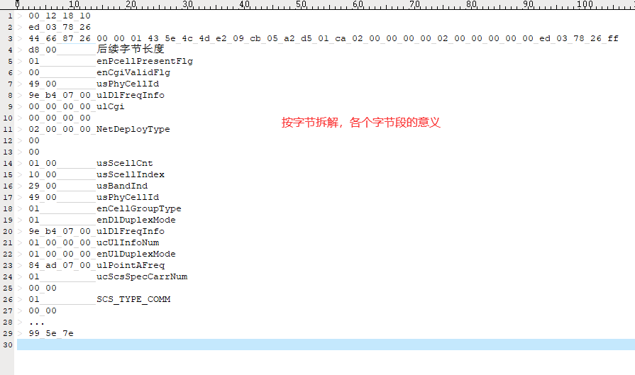 -
Report: DT_CMD_ID_CMM_PCELL_RPT
此报告用来解码当前服务小区的信息，主要解析：频点、PCI、Beam Id、Band等信息。
源码举例：00 12 18 10 0b 00 78 26 38 72 87 26 00 00 57 43 ca 61 8d 22 18 cb 05 a2 d5 01 d4 02 00 00 00 00 02 00 00 00 00 00 0b 00 78 26 ff 38 00 4c 49 00 00 01 01 00 00 9e b4 07 00 29 00 01 01 49 00 00 00 05 00 1d fd 4e 00 e0 fc a8 ff 34 00 00 00 00 00 00 00 00 00 00 00 00 00 ff ff 00 80 00 80 00 80 00 80 00 80 91 62 7e
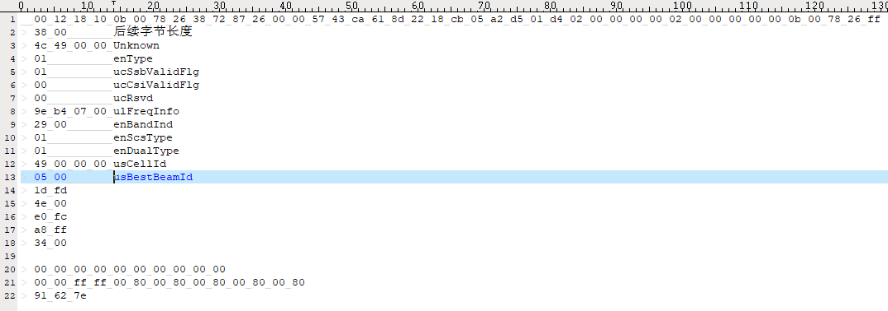 -
Report: NPHY_DT_SSB_Serv_Meas_Result
此报告用来解码当前服务小区的Beam组参数信息，主要解析：PCI、BeamId、Rsrp、Rsrq、Rssi、Sinr等信息。
源码举例：00 12 18 12 16 d0 78 36 53 6a 87 26 00 00 4e dd 23 59 0a b9 0e cb 05 a2 d5 01 4e dd 00 00 00 00 00 00 00 00 00 00 16 d0 78 36 ff 68 02 49 00 08 04 08 00 00 00 05 ff 00 00 17 fa 46 ff a1 fb 64 00 14 fa 4c ff 98 fb 87 00 a8 f9 4a ff 2e fb 94 00 17 fa 55 ff 92 fb a2 00 ff ff ff ff ff ff ff ff ff ff ff ff ff ff ff ff ff ff ff ff ff ff ff ff ff ff ff ff ff ff ff ff 17 fa 55 ff a1 fb a2 00 ... 02 15 7e
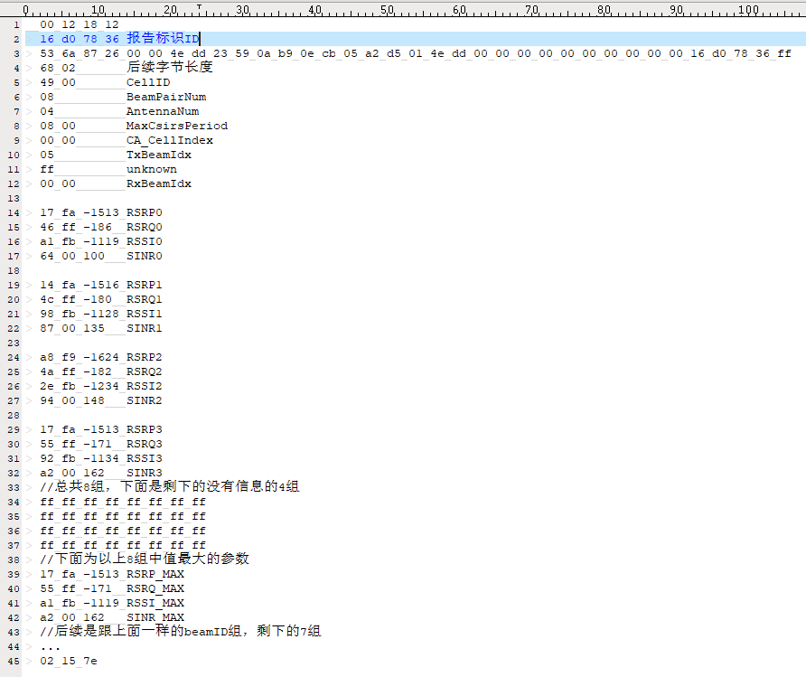 -
Report: DT_CMD_ID_CMM_NCELL_RPT
此报告用来解码邻区的Beam组参数信息，主要解析：nBeamId, nEARFCN, nBand, nCellid, sRsrp, sRsrq, sRssi, sSinr等信息。
源码举例：00 12 18 10 0e 00 78 26 f0 e8 5c a0 00 00 8e e9 fd 35 ea 39 0d c6 d9 a2 d5 01 db 2c 00 00 00 00 02 00 00 00 00 00 0e 00 78 26 ff 14 04 55 99 00 00 01 00 00 01 9e b4 07 00 01 01 29 00 01 0c 09 00 03 00 00 00 ff ff 00 80 00 80 00 80 00 80 00 80 13 02 00 00 ff ff 00 80 00 80 00 80 00 80 00 80 2c 02 00 00 05 00 21 fb 49 ff 21 fb a9 fe 49 ff 54 02 00 00 ff ff 00 80 00 80 00 80 00 80 00 80 dd 01 00 00 ff ff 00 80 00 80 00 80 00 80 00 80 1d 02 00 00 ff ff 00 80 00 80 00 80 00 80 00 80 02 00 00 00 ff ff 00 80 00 80 00 80 00 80 00 80 c1 01 00 00 03 00 09 fd c5 ff ea fc 7b ff d9 ff 4f 01 00 00 ff ff 00 80 00 80 00 80 00 80 00 80 c0 01 01 00 00 00 5a fd 39 00 01 fd a4 ff 39 00 3c 02 00 00 04 00 cb fc c6 ff cb fc 70 ff c6 ff aa 00 00 00 02 00 5f fd 33 00 21 fd a8 ff 24 00 ff ff 00 00 ff ff 00 80 00 80 00 80 00 80 00 80 ... ff ff 00 00 ff ff 00 80 00 80 00 80 00 80 00 80 8e 1a 7e
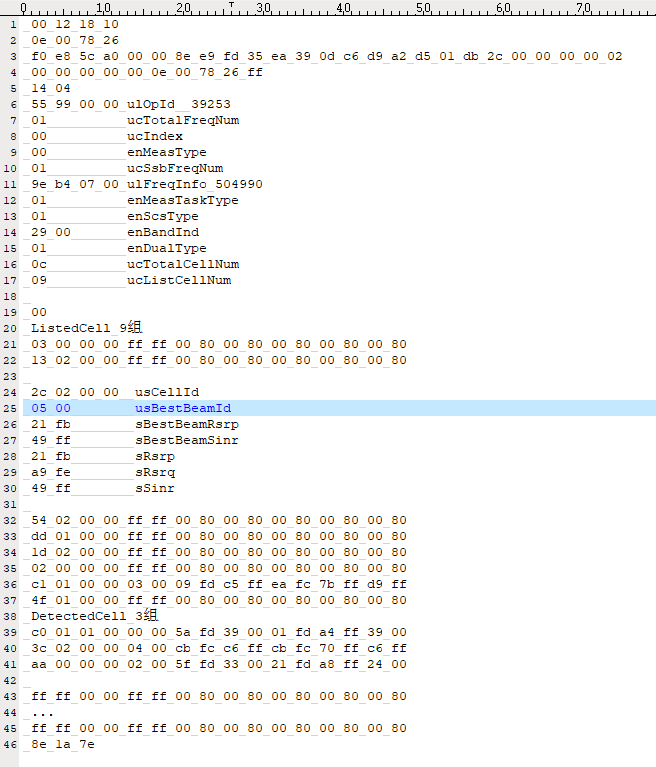 -
Report: DT_CMD_ID_UE_NL2_THROUGHPUT_INFO
此报告用来解码层二速率参数，主要解析：SdapUplinkThroughput、SdapDownlinkThroughput、PDCPUplinkThroughput、 PDCPDownlinkThroughput、RLCUplinkThroughput、RLCDownlinkThroughput、MACCW0UpLinkThroughput、MACCW0DownlinkThroughput、MACCW1UpLinkThroughput、 MACCW1DownlinkThroughput等信息。
源码举例：00 12 18 10 16 27 78 26 1c 17 87 26 00 00 83 42 43 23 c8 82 ab ca 05 a2 d5 01 c8 02 00 00 09 00 02 00 00 00 00 00 16 27 78 26 ff 78 02 16 17 87 26 e8 03 00 00 00 00 00 00 00 00 00 00 00 00 00 00 00 00 00 00 00 00 00 00 00 00 00 00 00 00 00 00 00 00 00 00 0c 02 00 00 00 00 00 00 00 00 00 00 00 00 00 00 ... e3 a3 7e
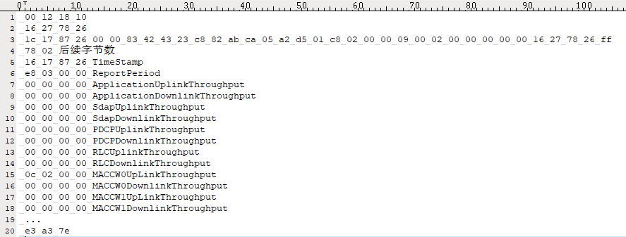 -
Report: NPHY_DEC_OM_DT_DL_THROUGHPUT
此报告用来解码层二速率参数，主要解析：NR_Throughput_PHY_DL信息。NR_Throughput_PHY_DL = naulTbThroughtput0 + naulTbThroughtput1
源码举例：00 12 18 13 03 00 79 36 2c e3 87 26 00 00 78 7a 63 29 52 cd 9e cb 05 a2 d5 01 78 7a 00 00 00 00 00 00 00 00 00 00 03 00 79 36 ff 38 00 00 00 00 00 00 00 00 00 80 4e 02 00 00 00 00 00 b0 94 03 00 00 00 00 00 00 00 00 00 00 00 00 00 00 00 00 00 00 00 00 00 10 00 00 00 16 00 00 00 00 00 00 00 00 00 00 00 50 70 7e
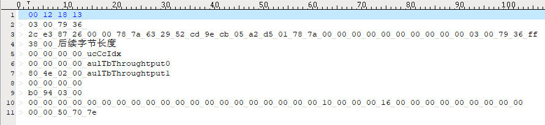 -
Report: NPHY_UL_SCHEDULE_OM_DT_PUS_SCHD_RPT
此报告用来解码层二速率参数，主要解析：QPSK_Count_UL、16QAM_Count_UL、64QAM_Count_UL、256QAM_Count_UL、NR_Modulation_Most_UL、 NR_Modulation_High_UL、NR_PRB_Num_UL_s、NR_PDCCH_UL_GrantCount、NR_PRB_Num_UL_Slot、NR_QPSK_Ratio_UL_s、NR_16QAM_Ratio_UL_s、NR_64QAM_Ratio_UL_s、 NR_256QAM_Ratio_UL_s、NR_Throughput_PHY_UL、NR_PUSCH_BLER、NR_PUSCH_Initial_BLER、NR_PUSCH_Residual_BLER、NR_Format0_0_Count、NR_Format0_1_Count、 NR_Format1_0_Count、NR_Format1_1_Count、NR_Format_Total_Count 等信息。
源码举例：00 12 18 17 00 90 79 36 2f 29 89 26 00 00 e8 99 e7 56 59 7c 23 cd 05 a2 d5 01 e8 99 00 00 00 00 00 00 00 00 00 00 00 90 79 36 ff cc 06 10 00 07 00 00 00 00 00 00 00 00 00 00 00 00 00 00 00 00 00 00 00 00 00 00 00 00 00 d9 00 00 00 00 00 00 00 00 00 00 00 d9 00 00 00 00 00 00 00 00 00 00 00 00 00 00 00 00 00 00 00 00 00 00 00 00 00 00 00 00 00 00 00 00 00 00 00 00 00 00 00 00 00 00 00 00 00 00 00 00 00 00 00 00 00 00 00 00 00 00 00 e8 03 00 00 00 36 00 00 ff ff ff ff 00 00 00 00 00 00 a0 00 9f 00 00 00 0b 03 00 00 d9 00 00 00 00 00 00 00 d9 00 00 00 a2 00 00 00 3a 0f 00 00 c8 1e 07 00 00 00 00 00 68 eb 04 00 00 00 00 00 00 00 00 00 29 00 00 00 ...... 00 00 00 00 00 00 00 00 ...... 00 00 00 00 00 00 00 00 00 00 00 00 00 00 00 00 00 00 00 00 00 00 00 00 00 00 00 00 00 00 00 00 00 00 00 00 00 00 00 00 00 00 00 00 00 00 00 00 00 00 00 00 00 00 00 00 00 00 00 00 00 00 00 00 00 00 00 00 00 00 00 00 00 00 00 00 00 00 00 00 00 00 00 00 00 00 00 00 00 00 00 00 00 00 00 00 00 00 00 00 00 00 00 00 00 00 00 00 00 00 00 00 00 00 00 00 00 00 00 00 00 00 00 00 00 00 00 00 00 00 00 00 00 00 00 00 00 00 00 00 00 00 00 00 00 00 00 00 10 6e 7e
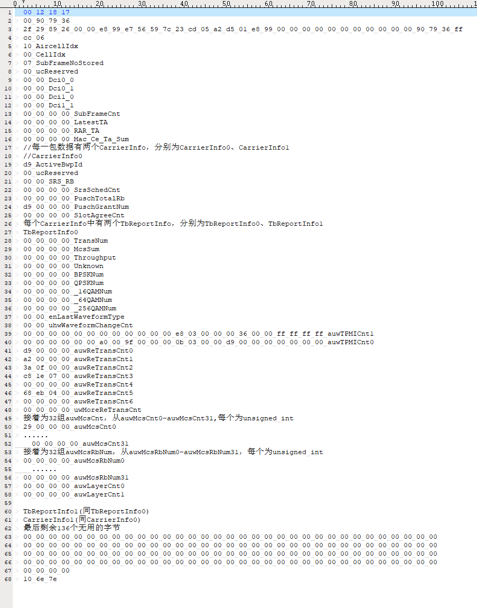 -
Report: NPHY_CHE_OM_DT_DL_LAYER_RPT
此报告用来解码：PRB_Num_DL_s、NR_PDCCH_DL_GrantCount、PRB_Num_DL_slot、NR_Most_Modulation_DL_s、 NR_High_Modulation_DL_s、NR_QPSK_Count_DL、NR_16QAM_Count_DL、NR_64QAM_Count_DL、NR_256QAM_Count_DL、NR_MCS_DL_Avg、NR_QPSK_Ratio_DL_s、 NR_16QAM_Ratio_DL_s、NR_64QAM_Ratio_DL_s、NR_256QAM_Ratio_DL_s、NR_QPSK_Ratio_DL_TB0_s、NR_16QAM_Ratio_DL_TB0_s、NR_64QAM_Ratio_DL_TB0_s、 NR_256QAM_Ratio_DL_TB0_s、NR_QPSK_Ratio_DL_TB1_s、NR_16QAM_Ratio_DL_TB1_s、NR_64QAM_Ratio_DL_TB1_s、NR_256QAM_Ratio_DL_TB1_s、NR_MCS_DL_Best、 NR_MCS_DL_Most、NR_MCS_DL_Info 等信息。
源码举例：00 12 18 13 02 e0 78 36 8f 14 61 a0 00 00 00 0d 89 ed cb 15 06 cb d9 a2 d5 01 00 0d 00 00 00 00 00 00 00 00 00 00 02 e0 78 36 ff 48 03 58 00 13 00 00 00 00 00 00 00 00 00 4f 03 00 00 00 00 00 00 00 00 00 00 03 00 00 00 00 00 00 00 00 00 00 00 00 00 00 00 4f 03 00 00 7f 57 00 00 00 00 00 00 00 00 00 00 00 00 00 00 4f 03 00 00 7f 57 00 00 00 00 00 00 00 00 00 00 00 00 00 00 00 00 00 00 00 00 00 00 4f 03 00 00 4f 03 00 00 00 00 00 00 ea 02 ea 02 ea 02 ea 02 ea 02 ea 02 ea 02 ea 02 ea 02 ea 02 0f 00 0d 00 0d 00 55 00 55 00 55 00 55 00 55 00 66 00 66 00 66 00 66 00 66 00 1e 00 1e 00 1e 00 1e 00 1e 00 01 00 00 00 00 00 00 00 00 00 00 00 00 00 00 00 00 00 00 00 00 00 00 00 00 00 0c 00 0c 00 0c 00 0c 00 0c 00 0c 00 0c 00 0c 00 0c 00 0c 00 03 00 03 00 03 00 03 00 03 00 03 00 03 00 03 00 03 00 03 00 03 00 03 00 03 00 03 00 03 00 03 00 03 00 03 00 00 00 00 00 00 00 00 00 00 00 00 00 00 00 00 00 00 00 00 00 00 00 00 00 00 00 00 00 00 00 00 00 00 00 00 00 00 00 00 00 00 00 00 00 00 00 00 00 00 00 00 00 00 00 00 00 00 00 00 00 00 00 00 00 00 00 00 00 00 00 00 00 00 00 00 00 00 00 00 00 00 00 00 00 00 00 00 00 00 00 00 00 00 00 00 00 00 00 00 00 00 00 00 00 00 00 00 00 00 00 00 00 00 00 00 00 00 00 00 00 00 00 00 00 00 00 00 00 00 00 00 00 00 00 00 00 00 00 00 00 00 00 00 00 00 00 00 00 00 00 00 00 00 00 00 00 00 00 00 00 00 00 00 00 00 00 00 00 00 00 00 00 00 00 00 00 00 00 00 00 00 00 00 00 00 00 00 00 00 00 00 00 00 00 00 00 00 00 00 00 00 00 00 00 00 00 00 00 00 00 00 00 00 00 00 00 00 00 00 00 00 00 00 00 00 00 00 00 00 00 00 00 00 00 00 00 00 00 00 00 00 00 00 00 00 00 00 00 00 00 00 00 00 00 00 00 00 00 00 00 00 00 00 00 00 00 00 00 00 00 00 00 00 00 00 00 00 00 00 00 00 00 00 00 00 00 00 00 00 00 00 00 00 00 00 00 00 00 00 00 00 00 00 00 00 00 00 00 00 00 00 00 00 00 00 00 00 00 00 00 00 00 00 00 00 00 00 00 00 00 00 00 00 00 00 00 00 00 00 00 00 00 00 00 00 00 00 00 00 00 00 00 00 00 00 00 00 00 00 00 00 00 00 00 00 00 00 00 00 00 00 00 00 00 00 00 00 00 00 00 00 00 00 00 00 00 00 00 00 00 00 00 00 00 00 00 00 00 00 00 00 00 00 00 00 00 00 00 00 00 00 00 00 00 00 00 00 00 00 00 00 00 00 00 00 00 00 00 00 00 00 00 00 00 00 00 00 00 00 00 00 00 00 00 00 00 00 00 00 00 00 00 00 00 00 00 00 00 16 00 60 00 98 01 10 01 00 00 00 00 00 00 31 00 00 00 00 00 00 00 00 00 00 00 00 00 00 00 00 00 00 00 00 00 00 00 00 00 00 00 00 00 00 00 00 00 00 00 00 00 00 00 00 00 00 00 00 00 00 00 00 00 00 00 00 00 00 00 00 00 00 00 00 00 00 00 00 00 00 00 00 00 00 00 00 00 00 00 00 00 00 00 00 00 00 00 00 00 00 00 00 00 00 00 00 00 00 00 00 00 dc 00 00 00 c0 03 00 00 f0 0f 00 00 a0 0a 00 00 00 00 00 00 00 00 00 00 00 00 00 00 0d 03 00 00 33 76 7e
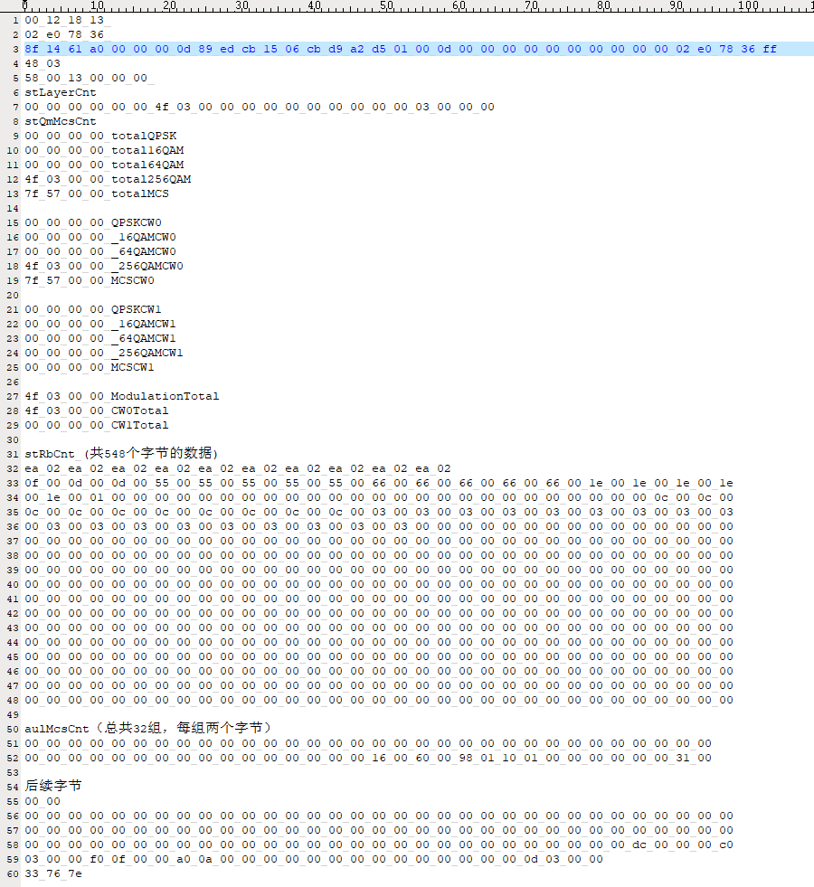 -
Report: NPHY_DEC_OM_DT_DL_HARQ_DECODE
此报告用来解码误块率参数，主要解析：NR_DL_Total_ACK_s、NR_DL_Total_NACK_s、NR_PDSCH_BLER、 NR_PDSCH_Initial_BLER、NR_PDSCH_Residual_BLER 信息。
源码举例：00 12 18 13 00 00 79 36 83 94 60 a0 00 00 be 9e 41 51 37 6c 6d ca d9 a2 d5 01 be 9e 00 00 00 00 00 00 00 00 00 00 00 00 79 36 ff 9c 00 00 00 00 00 57 01 00 00 05 00 00 00 00 00 00 00 00 00 00 00 00 00 00 00 00 00 00 00 00 00 00 00 00 00 00 00 5c 01 00 00 05 00 00 00 00 00 00 00 00 00 00 00 00 00 00 00 00 00 00 00 00 00 00 00 00 00 00 00 00 00 00 00 05 00 00 00 01 00 00 00 00 00 00 00 00 00 00 00 00 00 00 00 00 00 00 00 00 00 00 00 00 00 00 00 00 00 00 00 00 00 00 00 00 00 00 00 00 00 00 00 00 00 00 00 00 00 00 00 00 00 00 00 00 00 00 00 00 00 00 00 00 00 00 00 00 00 00 00 00 00 00 00 00 00 00 00 44 9c 7e
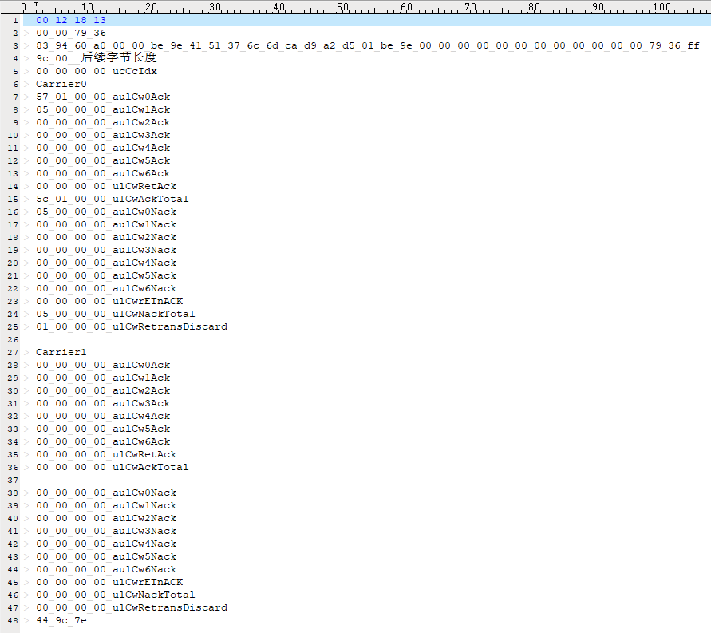 -
Report: NPHY_DEC_OM_RPT_PDCCH_DT_SEC
此报告用来解码CCE参数，主要解析：NR_CCE_Type1_Count、NR_CCE_Type2_Count、NR_CCE_Type4_Count、 NR_CCE_Type8_Count、NR_CCE_Type16_Count 信息。
源码举例：00 12 18 13 02 00 79 36 82 94 60 a0 00 00 bc 9e 3e 51 06 6b 6d ca d9 a2 d5 01 bc 9e 00 00 00 00 00 00 00 00 00 00 02 00 79 36 ff 40 00 00 00 00 00 62 01 00 00 00 00 62 01 00 00 01 00 61 01 00 00 00 00 00 00 00 00 00 00 01 00 00 00 00 00 00 00 00 00 61 01 00 00 00 00 00 00 00 00 00 00 00 00 00 00 00 00 00 00 00 00 00 00 00 00 a1 0f 7e
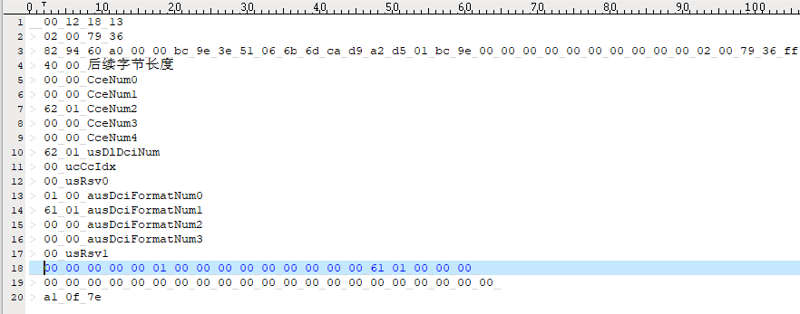 -
Report: NPHY_UL_SCHEDULE_OM_DT_POW_CTRL_RPT
此报告用来解析：NR_SRS_TxPower、NR_PUSCH_TxPower、NR_PUSCH_PathLoss、NR_PUCCH_TxPower、NR_PUCCH_PathLoss 信息。
源码举例：00 12 18 17 01 90 79 36 e4 9a 87 26 00 00 8a 1c 7e b7 24 a0 48 cb 05 a2 d5 01 8a 1c 00 00 00 00 00 00 00 00 00 00 01 90 79 36 ff 60 00 10 00 00 00 a0 00 ff 7f 00 00 f0 ff a0 00 7a 00 04 00 4e 03 01 00 01 00 00 00 00 00 b4 ff ff ff 33 03 ff ff 00 00 00 00 ff 7f ff 7f ff 7f ff ff ff ff ff ff ff 7f ff 7f ff 7f ff 7f ff ff ff ff ff ff ff 7f a0 00 f1 ff 46 03 01 00 01 00 00 00 00 00 98 ff 00 00 00 00 01 00 03 00 d3 ff ff ff be f9 7e
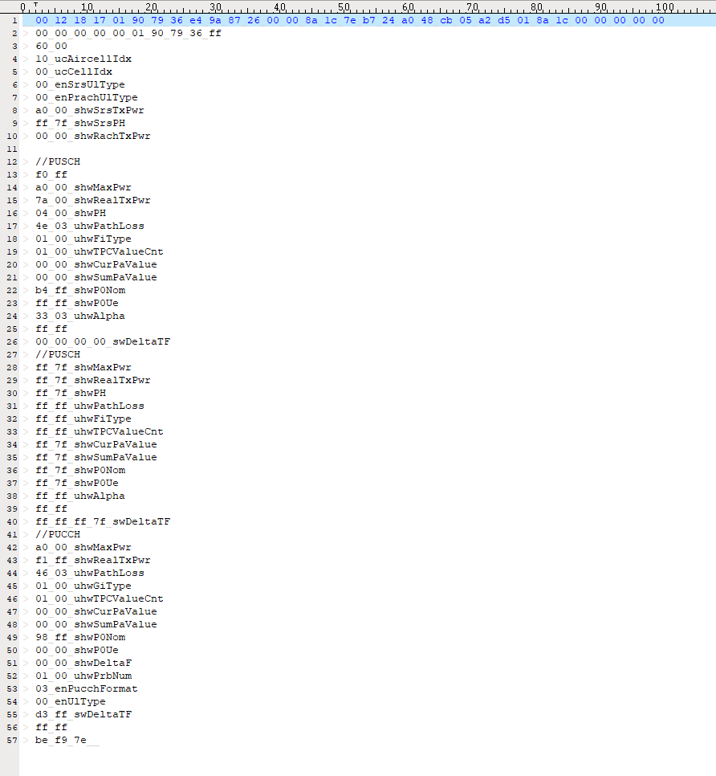 -
Report: NPHY_UL_CSI_OM_RPT_DT_GENL_IND
此报告用来解析：NR_Avg_CQI、NR_Avg_CQI_WB 信息。
源码举例：00 12 18 17 00 80 7A 36 E0 DF 87 26 00 00 5A 59 DB 20 12 DF 9A CB 05 A2 D5 01 5A 59 00 00 00 00 00 00 00 00 00 00 00 80 7A 36 FF 04 00 00 02 0C FF 06 64 7E
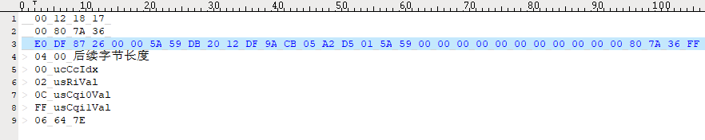 -
Report: RTP_INFO_RX_PROBE_HOOK
此报告用来解析RTP数据包：RTP_Direction、RTP_Sequence_Number、Source_SSRC、RTP_Timestamp、 RTP_Media_Type、RTP_Packets_Lost_Num、RTP_Packets_Num、RTP_Loss_Rate、Jitter、HandSetTime信息。
源码举例：00 12 18 06 0C DE 78 C0 4B D6 75 02 00 00 45 0D 65 B7 4D 37 81 B4 2A 3D D6 01 45 0D 00 00 02 00 03 00 00 00 00 00 0C DE 78 C0 FF 4C 00 03 00 00 00 02 00 03 00 03 00 00 00 02 00 03 00 38 00 00 00 0C DE 00 00 02 00 00 00 00 6B B8 2E CC E7 15 00 BB EF 4D 43 00 00 00 00 05 00 02 00 01 00 00 00 08 00 00 00 00 00 00 00 00 00 00 00 00 00 00 00 00 00 00 00 00 00 00
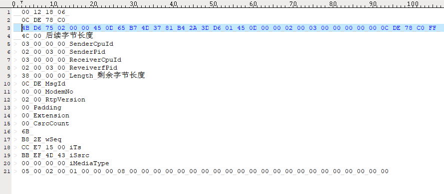 -
Report: NL2_DT_KEY_EVENT_INFO
此报告用来解析事件信息。
源码举例：00 12 18 10 00 00 20 26 5c dd 08 14 00 00 77 26 fe 98 22 0f 66 f6 7b 62 d5 01 23 0a 00 00 00 00 02 00 00 00 00 00 66 00 00 00 ff 00 00 f3 7b 7e
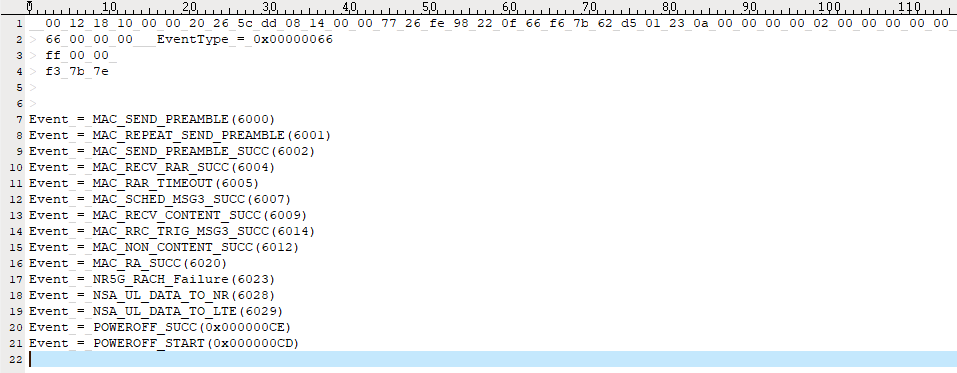
-
三、海思4G解析
-
已解析内容
目前海思V3版本已经解析4G内容
分组 对应参数 基本参数 时间、经度、纬度、高度、速度。 主服 频点、PCI、Band、RSRP、RSRQ、RSSI、SINR、TAC、ECI。 邻区 频点、PCI、RSRP、RSRQ、RSSI、SINR。 层二速率 PDCP_DL、PDCP_UL、RLC_DL、RLC_UL、MAC_DL、MAC_UL、PHY_Code0_DL、PHY_Code1_DL、PHY_DL、PHY_UL。 应用层速率 FTP上传下载速率(平均速率、瞬时速率、最大速率、传输时间、传输大小)、Http上传下载速率(平均速率、瞬时速率、最大速率、传输时间、传输大小)。 层三信令 RRC信令、NAS信令、IMS信令等。 以上列举了一些常用的参数，其它不常用的不在这里列举说明。
-
4G源码解析图解
-
Report: LRRC_LPHY_MEAS_INFO_CONNECTED_IND
此报告用来解码当前主服小区和邻区的信息，主要解析：主服(频点、PCI、Band、RSRP、RSRQ、RSSI、SINR)、 邻区(频点、PCI、RSRP、RSRQ、RSSI、SINR)、载波聚合小区(频点、PCI、RSRP、RSRQ、RSSI、SINR) 等信息。
源码举例1：44 02 60 EA 07 CA D8 5D E1 D9 09 00 00 12 18 02 88 09 78 20 04 28 87 26 00 00 20 71 60 29 CA AA BF CA 05 A2 D5 01 84 19 00 00 AB 00 00 00 00 00 00 00 88 09 78 20 FF F0 00 33 00 00 00 18 47 03 00 03 00 03 00 00 00 00 00 00 00 00 00 49 00 C1 FC 5E FF 14 FE 00 00 DB FF 48 00 CF FC 70 FF 14 FE 00 00 E3 FF 01 00 C5 FC 5B FF 12 FE 00 00 DA FF 00 00 00 00 00 00 00 00 00 00 00 00 00 00 00 00 00 00 00 00 00 00 00 00 00 00 00 00 00 00 00 00 ... 41 3F 7E
源码举例2：00 12 18 02 88 09 78 20 1A CE AD 04 00 00 08 31 08 F2 82 8E 1E 71 DD A1 D5 01 A3 62 00 00 AB 00 00 00 00 00 00 00 88 09 78 20 FF F0 00 35 00 00 00 01 00 00 00 06 4A 27 00 01 00 00 00 00 00 00 00 00 00 00 00 DB 01 EF FC 83 FF 0C FE 02 00 F0 FF
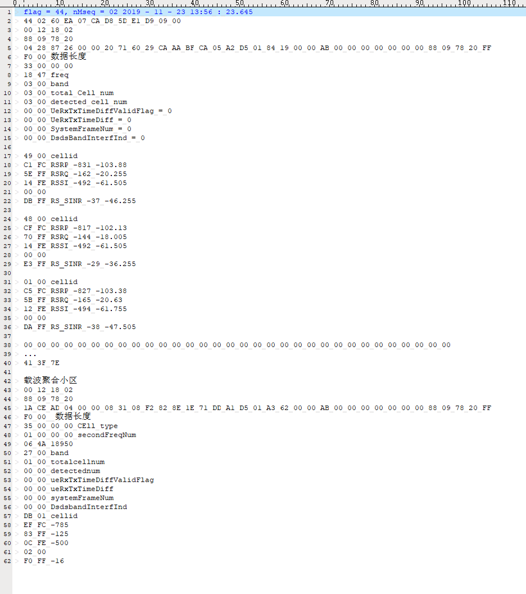 -
Report: DT_CMD_ID_UE_L2_THROUGHPUT_CAIND
此报告用来解码速率信息，主要解析：PDCP_DL、PDCP_UL、RLC_DL、RLC_UL、MAC_DL、MAC_UL 信息。
源码举例：00 12 18 02 00 15 78 20 86 C6 91 02 00 00 AA B6 CB BA 78 BD 72 7A B1 40 D6 01 31 13 00 00 B3 00 00 00 00 00 00 00 00 15 78 20 FF EC 00 6F FC 01 00 A6 00 04 00 E8 03 00 00 00 00 00 00 00 00 00 00 1E 00 00 00 00 00 00 00 20 00 00 00 02 00 00 00 32 00 00 00 88 00 00 00 07 00 00 00 00 00 00 00 00 00 00 00 00 00 00 00 00 00 00 00 00 00 00 00 00 00 00 00 00 00 00 00 00 00 00 00 00 00 00 00 00 00 00 00 00 00 00 00 00 00 00 00 00 00 00 00 00 00 00 00 00 00 00 00 00 00 00 00 00 00 00 00 00 00 00 00 00 00 00 00 00 00 00 00 00 00 00 00 00 00 00 00 00 00 00 00 00 00 00 00 32 00 00 00 88 00 00 00 00 00 00 00 00 00 00 00 00 00 00 00 00 00 00 00 00 00 00 00 00 00 00 00 00 00 00 00 00 00 00 00 00 00 00 00 00 00 00 00 00 00 00 00 00 00 00 00 00 00 00 00 00 00 00 00 00 00 00 00 00 00 00 00 00 00 00 00 00 00 00 00 00 00 00 00 00 00 00 00 00 00 00 00
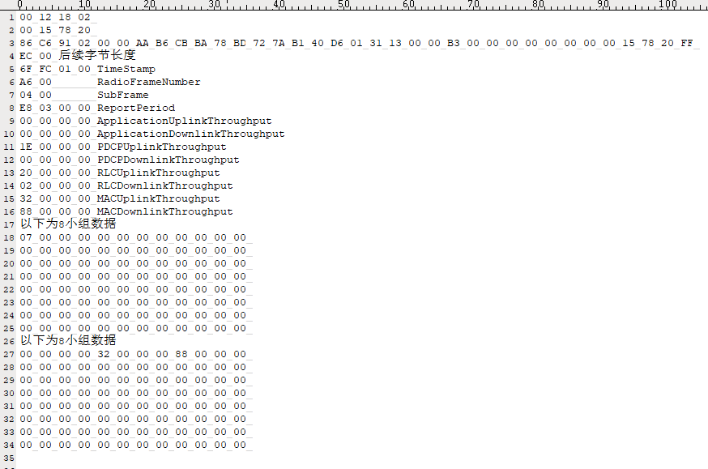 -
Report: LRRC_LPHY_MEAS_INFO_IND
此报告用来解码 SRS_Power 信息。
源码举例：00 12 18 02 a6 09 78 20 c2 54 5c a0 00 00 60 b8 07 99 8a 8f 5c c5 d9 a2 d5 01 f3 e8 02 00 ab 00 00 00 00 00 00 00 a6 09 78 20 ff 58 00 03 00 00 00 00 00 00 00 0a 00 7f 00 01 00 18 00 05 00 fd ff 0d 00 fa ff 10 00 0c 00 0c 00 0a 00 02 01 21 fd 18 fd 20 fd 00 00 00 00 63 00 63 00 63 00 63 00 fc ff ff ff 04 00 00 00 63 00 00 00 63 00 00 00 63 00 00 00 63 00 00 00 63 00 00 00 63 00 00 00 00 00 00 00 d5 2d 7e
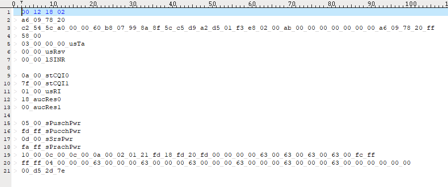 -
Report: DT_CMD_ID_SYS_UE_NAS_EMM_REG_STATE_IND
此报告用来解码 TAC、ECI 信息。
源码举例：00 12 18 02 5D 0B 78 20 EE C6 21 7E 00 00 EE C8 39 67 97 3F 28 7A 6B 63 D7 01 25 14 02 00 AD 00 00 00 00 00 00 00 5D 0B 78 20 FF 1C 00 5D 0B 00 00 01 00 00 00 01 00 00 00 00 00 00 00 64 F0 00 00 36 47 00 00 01 64 54 00
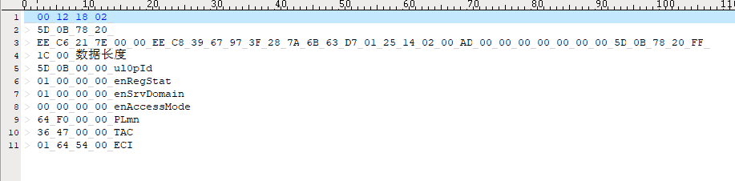 -
Report: DT_CMD_ID_LRRC_SERVERING_CELL_INFO_CAIND
此报告用来解码 TAC、ECI、BAND、DL_Frequency、UL_Frequency、DL_Bandwidth、UL_Bandwidth 信息。
源码举例：00 12 18 02 12 8D 78 20 C1 3A 46 7E 00 00 0D 03 AD 79 04 02 9E A5 6B 63 D7 01 DA 1C 02 00 AB 00 00 00 00 00 00 00 12 8D 78 20 FF 9C 01 01 00 00 00 01 64 54 00 03 00 04 5B 04 5B 05 05 01 28 B1 FF FF FF C7 FF 01 00 00 00 64 F0 00 00 64 F0 00 00 00 00 00 00 00 00 00 00 00 00 00 00 00 00 00 00 00 00 00 00 00 00 00 00 00 00 00 00 00 00 00 00 00 00 00 00 00 00 00 00 00 00 00 00 00 00 00 00 00 00 00 00 00 00 00 00 64 F0 00 00 36 47 00 00 00 00 00 00 01 00 00 00 00 00 00 00 00 00 00 00 00 00 00 00 00 00 00 00 00 00 00 00 00 00 00 00 00 00 00 00 00 00 00 00 00 00 32 01 26 98 00 00 26 98 00 00 01 00 00 02 02 07 00 00 00 00 00 00 00 00 00 00 00 00 00 00 00 00 00 00 00 00 00 00 00 00 00 00 00 00 00 00 00 00 00 00 00 00 00 00 00 00 00 00 00 00 00 00 00 00 00 00 00 00 00 00 00 00 00 00 00 00 00 00 00 00 00 00 00 00 00 00 00 00 00 00 00 00 00 00 00 00 00 00 00 00 00 00 00 00 00 00 00 00 00 00 00 00 00 00 00 00 00 00 00 00 00 00 00 00 00 00 00 00 00 00 00 00 00 00 00 00 00 00 00 00 00 00 00 00 00 00 00 00 00 00 00 00 00 00 00 00 00 00 00 00 00 00 00 00 00 00 00 00 00 00 00 00 00 00 00 00 00 00 00 00 00 00 00 00 00 00 00 00 00 00 00 00 00 00 00 00 00 00 00 00 00 00 00 00 00 00 00 00 00 00 00 00 00 00 00 00 00 00 00 00 00 00 00 00 00 00 00 00 00 00 00 00 00 00 00 00 00 00 00 00 00 00 00 00 00 00 00 00 00 00 00 00 00 00 00 00 00 00 00 00 00 00 00 00 00 00 00 00 00 00
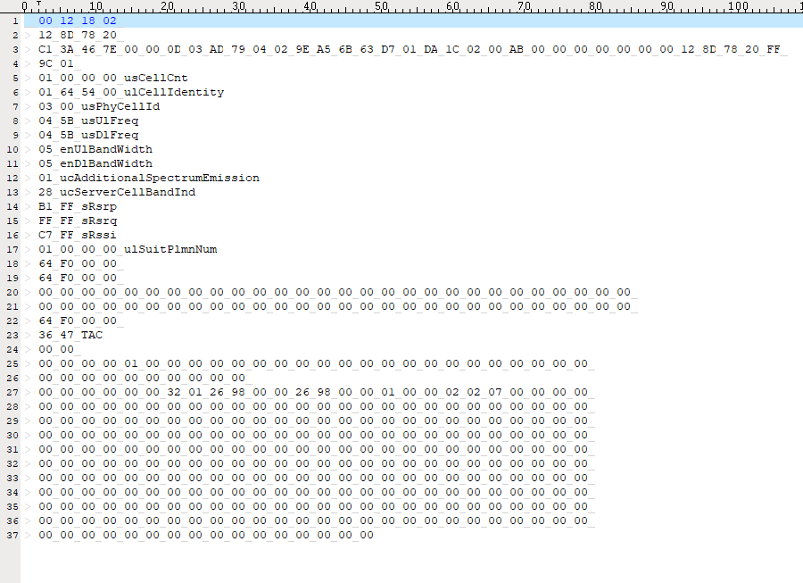 -
Report: LPHY_IND_TURBO_RPT_DL_THROUGHPUT_STAT
此报告用来解码 PHY_Code0_DL、PHY_Code1_DL、PHY_DL 信息。
源码举例：00 12 18 03 03 54 7c 30 0f 09 5d a0 00 00 df 75 2e 90 b1 85 33 c6 d9 a2 d5 01 df 75 00 00 00 00 00 00 00 00 00 00 03 54 7c 30 ff 28 00 08 03 00 00 00 00 00 00 00 00 00 00 00 00 00 00 00 00 00 00 08 03 00 00 00 00 00 00 00 00 00 00 00 00 00 00 00 00 00 00 61 a4 7e
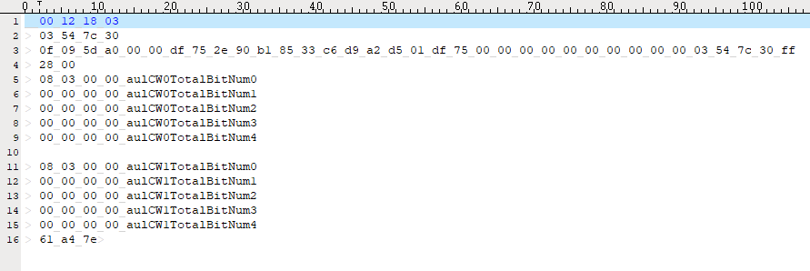 -
Report: LPHY_CQI_OM_PEROID_CQI_RESULT_IND
此报告用来解码 Rank_Indicator 信息。
源码举例：00 12 18 03 03 28 7C 30 77 1D D0 16 00 00 79 DC 59 CF 41 4D C9 56 0F A2 D5 01 79 DC 00 00 00 00 00 00 00 00 00 00 03 28 7C 30 FF 22 00 A3 03 01 00 00 00 00 00 00 06 00 00 02 00 0C 04 0E 0E 0E 00 00 00 00 00 0E 0E 0E 0F 00 00 00 00 00 06 D4 77 7E
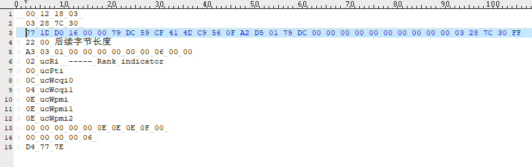 -
Report: LPHY_UL_SCHEDULE_STAT_INFO_IND
此报告用来解码 PHY_UL 信息。PHY_UL = nThroughput_0_0 + nThroughput_0_1 + nThroughput_1_0 + nThroughput_1_1
源码举例：00 12 18 03 01 40 7E 30 FE C3 91 02 00 00 E5 C0 17 BA E6 B8 6F 7A B1 40 D6 01 E5 C0 00 00 00 00 00 00 00 00 00 00 01 40 7E 30 FF 40 00 02 00 00 00 00 00 00 00 00 00 00 00 00 00 00 00 00 00 00 00 00 00 00 00 00 00 00 00 00 00 00 00 00 00 00 00 00 00 00 00 00 00 00 00 00 00 00 00 90 01 00 00 00 00 00 00 00 00 00 00 00 00 00 00

-
四、信令和GSM、WCDMA参数解析
-
Report: ID_GU_UE_Serving_And_Neighbor_Cells_IND
此报告用来解码Gsm主服小区信息，主要解析：Frequency、Reference_PSC、Reference_RSCP、Refernce_Ec_Io、 ActiveSetNum、MaxEc_Io、MaxRSCP、TotalEc_Io、TotalRSCP信息。
源码举例：00 12 18 02 2E A0 78 22 AE AC D5 61 05 00 7A 55 51 28 26 4C CA 77 CC 78 D7 01 16 09 00 00 80 00 00 00 00 00 00 00 2E A0 78 22 FF 18 05 2E A0 00 00 02 00 00 00 10 02 02 00 3A 00 00 80 00 80 C1 FF FF FF FF FF FF FF FF FF FF FF FF FF FF FF FF FF 22 00 86 00 00 80 00 80 FF FF FF FF 06 00 00 00 36 00 01 00 09 00 C2 FF 23 00 91 00 00 80 00 80 10 02 02 00 3A 00 BC FF 1D 00 81 00 00 80 00 80 40 00 01 00 15 00 B7 FF 18 00 86 00 00 80 00 80 2E 00 01 00 35 00 B5 FF 19 00 85 00 00 80 00 80 33 00 01 00 10 00 B3 FF 14 00 7E 00 00 80 00 80 31 00 01 00 2C 00 AF FF 0E 00 68 00 00 80 00 80 ...
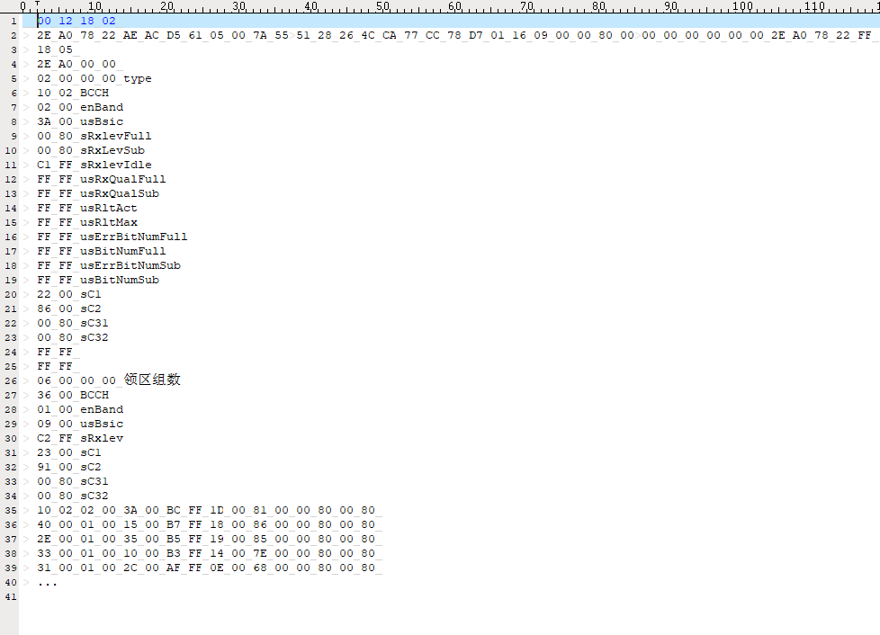 -
Report: ID_WAS_OM_CELL_INFO_IND
此报告用来解码WCDMA主服小区和邻区的信息，主要解析：主服(BCCH、BSIC、RxLevBCCH、RxLevFull、RxLevSub、RxQualFull、RxQualSub)、 邻区(BCCH、usBsic、sRxlev、C1、C2) 信息。
源码举例：44 02 8C 20 33 ED AC 5F 2D EC 0E 00 00 12 18 02 12 B0 78 23 A6 F5 C4 36 00 00 3A 03 47 D1 EF CF 37 E3 0D B9 D6 01 6F 00 00 00 85 00 00 00 00 00 00 00 12 B0 78 23 FF 9C 00 12 B0 7F 7F 7F 7F 7F 02 00 00 01 00 A7 29 28 00 50 FD 9B FF 00 00 B5 FD 01 01 F5 FF 7F 7F 00 00 00 00 00 00 7F 7F 7F 7F 7F 7F 7F 7F 7F 7F 7F 7F 7F 7F 7F 7F 7F 7F ... 21 CA 7E
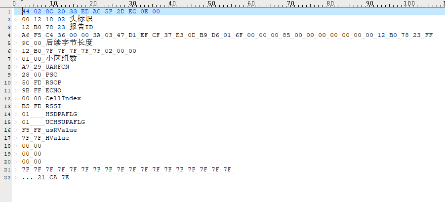 -
LTE RRC信令解析
源码举例：44 02 4F DB 7F 30 6E 5D FE 0A 0C 00 00 12 18 02 00 00 08 20 36 27 09 14 00 00 82 6F 5B 6D 97 1B BE F6 7B 62 D5 01 B0 00 00 00 AB 00 00 00 00 00 00 00 C9 0F 00 00 FD 0E 00 05 40 8C 4D 8E E2 F0 30 C2 F8 8D 8D A0 00 54 FA 7E
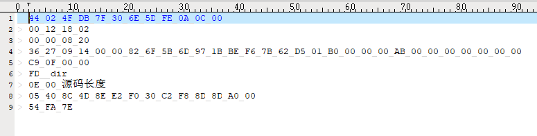 -
LTE NAS信令解析
源码举例：45 10 00 00 FD 2E 00 07 49 01 5A 49 50 0B F6 00 00 00 00 00 00 00 00 00 00 54 06 40 64 F0 00 10 2C 57 02 60 00 13 64 F0 00 10 2C 23 05 F4 00 00 00 00 64 01 01 1A 2D 7E
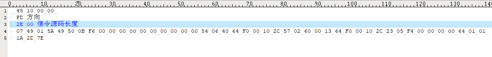 -
NR RRC信令解析
源码举例：00 12 18 10 00 00 08 26 ca 2c 2d 14 00 00 53 3f 03 2a 79 6d b0 21 7c 62 d5 01 48 00 00 00 00 00 02 00 00 00 00 00 0c 00 00 00 fe 13 00 04 00 40 01 05 f1 da 23 b8 08 52 20 26 56 92 a0 22 49 40 d5 e6 7e
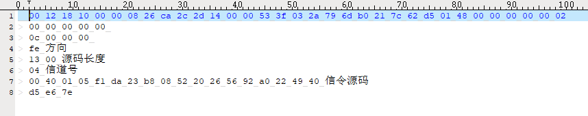 -
NR NAS信令解析
源码举例：44 02 2D 21 46 8E 1F 5F 2C 40 0C 00 00 12 18 10 00 00 08 26 62 5D 52 AF 00 00 1F 9A D2 43 DB AA 94 6A CA 64 D6 01 8A 06 00 00 05 00 02 00 00 00 00 00 08 08 00 00 FE 2D 00 08 08 00 04 2D 00 00 00 21 00 00 00 7E 00 4C 20 00 07 F4 00 02 00 00 00 00 00 00 00 00 00 00 00 00 00 00 00 00 00 00 00 00 00 00 00 00 9F B5 7E
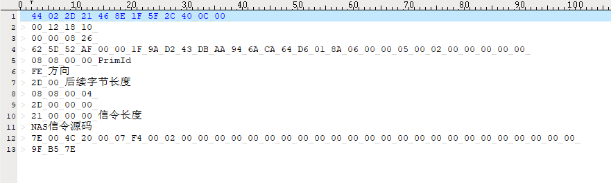 -
LTE IMS信令解析
源码举例：00 12 18 02 7A 00 78 20 AF DF 7B 17 00 00 00 27 B5 DB 55 49 90 23 10 A2 D5 01 ED C5 03 00 DF 00 00 00 00 00 00 00 7A 00 78 20 FF A0 0F 52 45 47 49 53 54 45 52 20 73 69 70 3A 69 6D 73 2E 6D 6E 63 30 30 31 2E 6D 63 63 34 36 30 2E ...
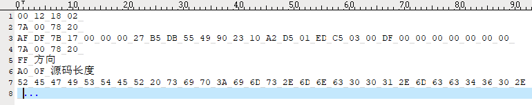 -
GSM RR信令解析
源码举例：44 02 29 05 CC FF A3 5E 5F 02 04 00 00 12 18 02 00 00 08 22 6E F0 DF 1D 00 00 AC E7 EE 4A 29 3C 85 2E 25 1B D6 01 31 01 00 00 80 00 00 00 00 00 00 00 00 00 00 00 FD 1F 00 00 00 01 00 17 00 00 00 01 06 00 F0 00 F8 48 7D C9 32 A6 2C 25 A4 CB 2B 2B 2B 2B 2B 2B 2B 2B DB 5E 7E
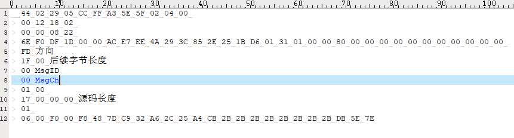 -
MM CC RR信令解析
源码举例1：44 02 7F 77 CD FF A3 5E 11 BC 03 00 00 12 18 02 00 00 08 23 8B 6B E0 1D 00 00 F2 F2 1C 60 F0 03 18 2F 25 1B D6 01 3F 01 00 00 8E 00 00 00 00 00 00 00 0F 01 00 00 FE 1A 00 0F 01 00 00 12 00 00 00 0E 00 00 00 05 24 31 03 50 58 82 05 F4 00 00 00 00 C2 28 EE 7E
源码举例2：44 02 09 3D 34 ED AC 5F D1 0E 08 00 00 12 18 02 00 00 08 23 0E 60 C5 36 00 00 DD 03 0D D3 82 AC B6 E3 0D B9 D6 01 00 00 00 00 85 00 00 00 00 00 00 00 00 0D 00 00 FD 11 00 0D 31 18 00 24 AE 1B 81 4C 36 16 11 27 11 91 81 00 E5 5F 7E
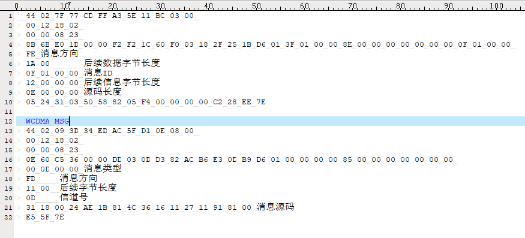